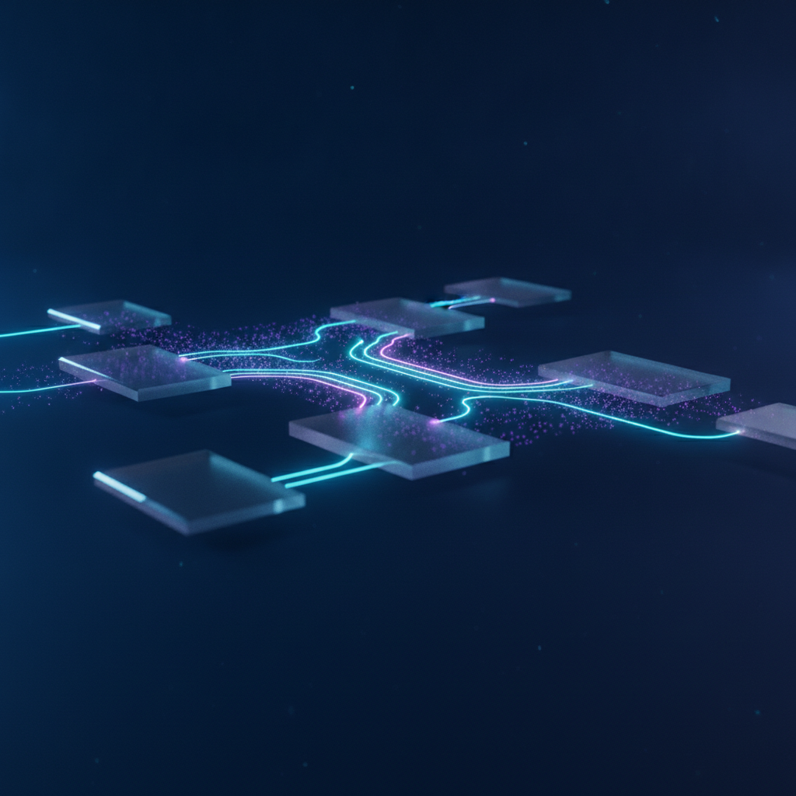
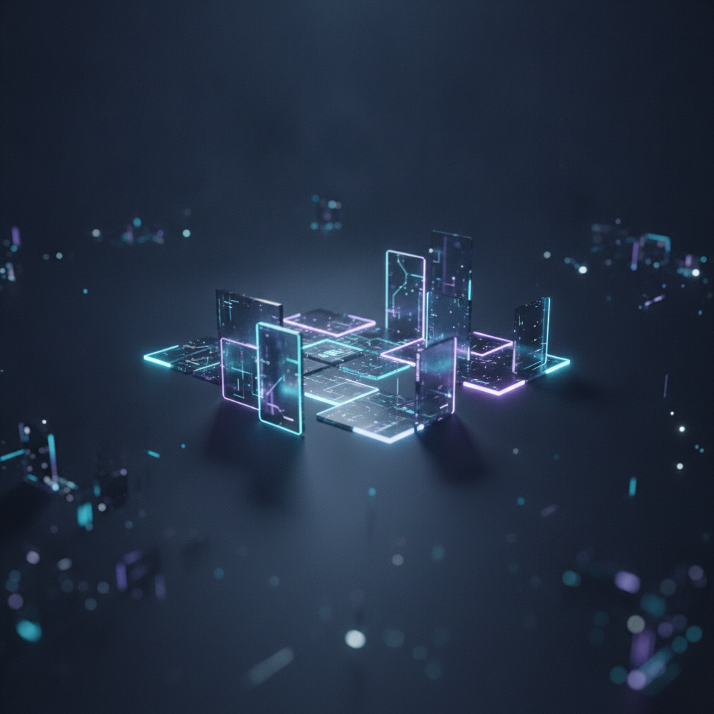
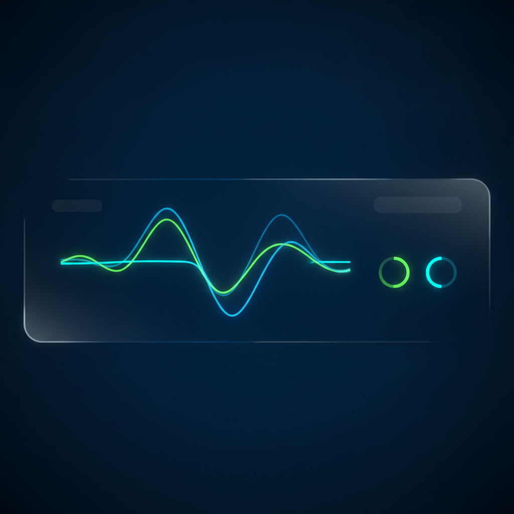

Wir entwickeln keine theoretischen Konzepte, sondern implementieren wartbare, messbare und hochgradig ausfallsichere Automatisierungen für Ihren operativen Alltag.

Die Implementierung von künstlicher Intelligenz darf kein Glücksspiel sein. Bei der Qualitaets Test GmbH betrachten wir KI-Systeme als klassischen Bestandteil moderner Softwaretechnik.
Das bedeutet: Jede Lösung muss den gleichen strengen Qualitätskriterien in Bezug auf Stabilität, Wartbarkeit, Sicherheit und Skalierbarkeit standhalten wie ein Kernbanksystem oder eine ERP-Software. Wir begleiten Sie von der ersten Potenzialanalyse über die agile Entwicklung bis hin zum langfristigen Betrieb und stellen sicher, dass Ihre Investition einen klaren, messbaren Return on Investment (ROI) liefert.
Die Integration von Large Language Models (LLMs) in bestehende Geschäftsprozesse erfordert weit mehr als das einfache Absenden eines Prompts an eine API. Wir konzipieren und implementieren komplexe Orchestrierungssysteme, die LLMs als intelligente Verarbeitungsstationen in Ihren Datenflüssen nutzen. Dabei binden wir alle relevanten Schnittstellen sauber an – von ERP- und CRM-Systemen über Microsoft 365 bis hin zu Google-APIs und proprietären Datenbanken.
Besonderen Wert legen wir auf eine stabile Fehlerlogik. Wenn ein LLM-Anbieter temporär überlastet ist oder eine unerwartete Antwort liefert, fängt unser System dies über intelligente Retry-Mechanismen, Fallback-Modelle und automatisierte Validierungsschritte ab. So wird sichergestellt, dass die nachgelagerten Systeme stets saubere, strukturierte und korrekte Daten erhalten. Ihre Prozesse laufen unterbrechungsfrei und mit maximaler Präzision.
Nicht jeder Prozess, der automatisiert werden kann, sollte auch automatisiert werden. Um Fehlinvestitionen zu vermeiden, starten wir jedes Projekt mit einer gründlichen Analyse. In unserem bewährten 'Process Scan' analysieren wir gemeinsam mit Ihren Fachexperten die bestehenden Arbeitsabläufe. Wir identifizieren manuelle Medienbrüche, zeitintensive Routineaufgaben und typische Fehlerquellen im operativen Alltag.
Auf Basis dieser Analyse entwickeln wir eine detaillierte Roadmap. Wir bewerten die identifizierten Automatisierungspotenziale nach ihrer technischen Machbarkeit und ihrem wirtschaftlichen Nutzen (ROI). Sie erhalten eine transparente Entscheidungsvorlage, die Ihnen genau zeigt, an welchen Stellen der Einsatz von KI-Automatisierung den größten Hebel für Ihr Unternehmen hat und wie die konkreten Implementierungsschritte aussehen.
Wir glauben an schnelle, greifbare Ergebnisse statt an monatelange, theoretische Konzeptionsphasen. Deshalb setzen wir konsequent auf die Entwicklung von MVPs. Innerhalb von nur 2 bis 4 Wochen realisieren wir ein erstes, voll funktionsfähiges und produktives Softwaremodul, das eine konkrete, klar abgegrenzte Aufgabe in Ihrem Unternehmen übernimmt. Dies ermöglicht es Ihnen, den Nutzen der Technologie sofort im realen Betrieb zu erleben.
Trotz der schnellen Entwicklungszeit machen wir keine Kompromisse bei der Qualität. Jedes MVP wird nach unseren strengen Architekturstandards entwickelt, ist vollständig dokumentiert und läuft auf einer stabilen Infrastruktur. Das MVP dient nicht als Wegwerf-Prototyp, sondern als solides, modular erweiterbares Fundament, auf dem wir im weiteren Projektverlauf flexibel und sicher aufbauen können.

Eine Automatisierung ist kein einmaliges Projekt, sondern ein lebendes System. Nach dem erfolgreichen Go-Live beginnt die Phase des kontinuierlichen Betriebs. Wir übernehmen das proaktive Monitoring Ihrer Systeme, überwachen die Antwortzeiten, Fehlerraten und Verarbeitungsgeschwindigkeiten und stellen sicher, dass alle Schnittstellen jederzeit reibungslos funktionieren. So können Sie sich voll und ganz auf Ihr Kerngeschäft konzentrieren.
Mit maßgeschneiderten Runbooks und automatisierten Alerting-Systemen reagieren wir sofort auf Unregelmäßigkeiten, oft noch bevor diese Auswirkungen auf Ihren Betrieb haben. Wir passen die Systeme kontinuierlich an Updates von Drittanbieter-APIs an und optimieren die Workflows iterativ auf Basis realer Nutzungsdaten. So bleibt Ihre Automatisierungslösung dauerhaft stabil, sicher und auf dem neuesten Stand der Technik.

Egal ob Sie am Anfang Ihrer Automatisierungsreise stehen oder ein bestehendes System stabilisieren möchten: Wir unterstützen Sie mit fundierter Expertise und pragmatischen Lösungen. Vereinbaren Sie jetzt ein unverbindliches Erstgespräch.
Erstgespräch buchen